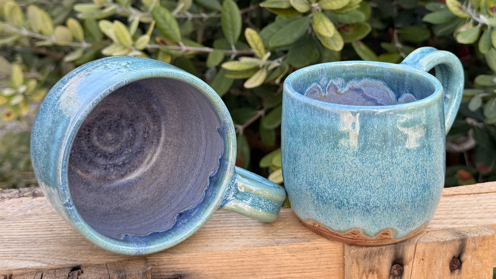
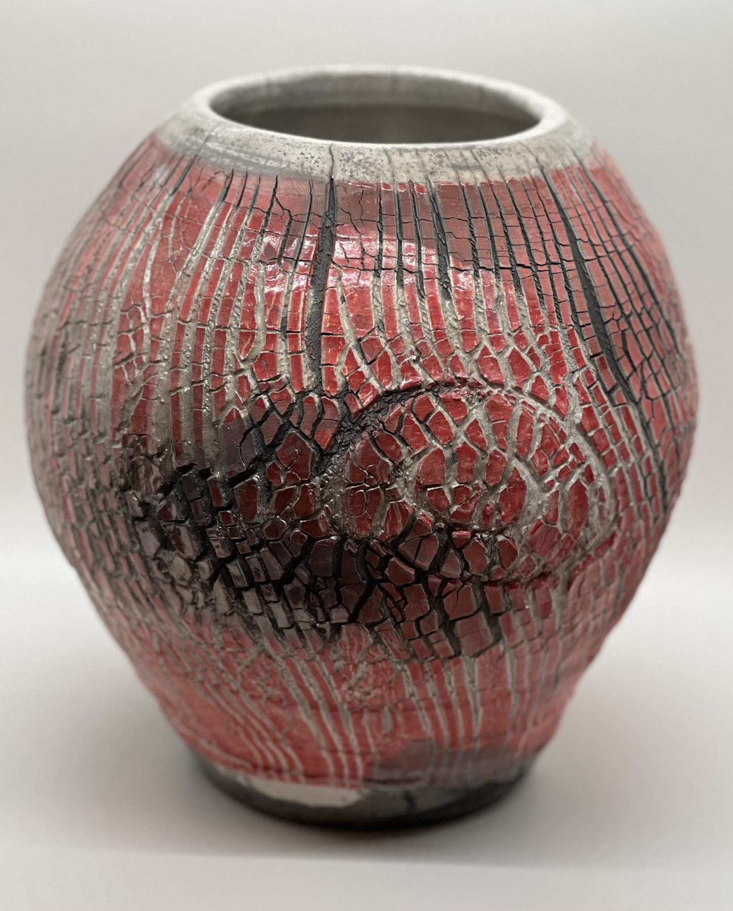

Stephanne Martin
Poetry, Written in Clay.
Every curve tells a story. Every texture holds a feeling. Every piece begins with a simple handful of earth and becomes something entirely its own.
Explore the CollectionThe artist
Welcome to the pottery of Stephanne Martin, where art is shaped by hand and beauty is found in the imperfect, the unexpected, and the extraordinary.
Selected works
A Collection of Quiet Expressions
Loading gallery…
Pottery is poetry you can hold.
